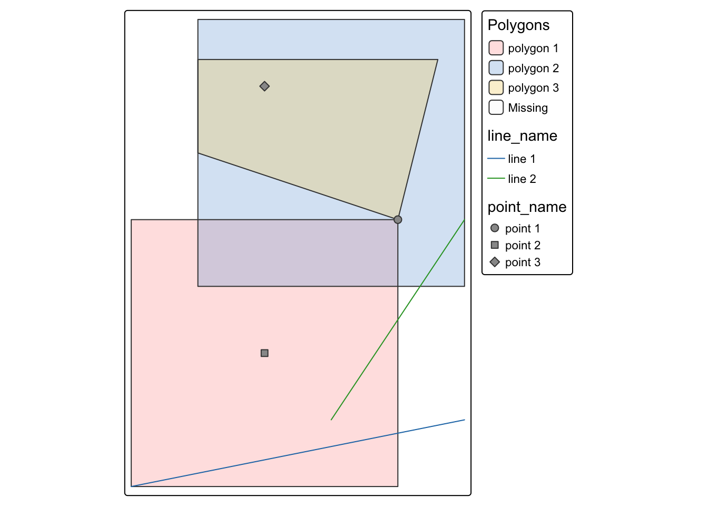

In this chapter, we learn how two spatial datasets (sf objects) can interact with each other. In other words, we explore how geographic features relate across datasets (We follow R as GIS for Economists.)
We start by looking at topological relationships, which describe how spatial objects are positioned relative to one another. For example, we use functions like sf::st_intersects() to check whether two features overlap, and sf::st_is_within_distance() to see whether they are close to each other.
The function sf::st_intersects() is especially important because it is the most commonly used relationship and is the default option when working with spatial filtering and joining in sf.
Next, we move on to spatial subsetting, where we filter one dataset based on its geographic relationship with another dataset. For example, we might keep only the features that fall within a certain region.
Finally, we cover spatial joins, which allow us to combine information from two spatial datasets. In this case, data from one dataset (such as attributes or variables) are added to another based on how their spatial features relate.
pacman::p_load( sf, # vector data operations dplyr, # data wrangling data.table, # data wrangling ggplot2, # for map creation tmap # for map creation)
10.1 Data
In this section, we work with three types of sf objects: points, lines, and polygons. To help you understand how spatial interaction functions work, we begin with simple, made-up datasets.
Points
# create points point_1 <-st_point(c(2, 2))point_2 <-st_point(c(1, 1))point_3 <-st_point(c(1, 3))# combine the points to make a single sf of pointspoints <-list(point_1, point_2, point_3) %>%st_sfc() %>%# combines individual points into a geometry columnst_as_sf() %>%# sf data framemutate(point_name =c("point 1", "point 2", "point 3"))points
Simple feature collection with 3 features and 1 field
Geometry type: POINT
Dimension: XY
Bounding box: xmin: 1 ymin: 1 xmax: 2 ymax: 3
CRS: NA
x point_name
1 POINT (2 2) point 1
2 POINT (1 1) point 2
3 POINT (1 3) point 3
Lines
# create lines line_1 <- sf::st_linestring(rbind(c(0, 0), c(2.5, 0.5)))line_2 <- sf::st_linestring(rbind(c(1.5, 0.5), c(2.5, 2)))# combine the lines to make a single sf objectlines <-list(line_1, line_2) %>% sf::st_sfc() %>% sf::st_as_sf() %>% dplyr::mutate(line_name =c("line 1", "line 2"))lines
Simple feature collection with 2 features and 1 field
Geometry type: LINESTRING
Dimension: XY
Bounding box: xmin: 0 ymin: 0 xmax: 2.5 ymax: 2
CRS: NA
x line_name
1 LINESTRING (0 0, 2.5 0.5) line 1
2 LINESTRING (1.5 0.5, 2.5 2) line 2
Polygons
In sf::st_polygon(), the first and last coordinates must be the same to “close” the polygon.
# create polygons polygon_1 <-st_polygon(list(rbind(c(0, 0), c(2, 0), c(2, 2), c(0, 2), c(0, 0))))polygon_2 <-st_polygon(list(rbind(c(0.5, 1.5), c(0.5, 3.5), c(2.5, 3.5), c(2.5, 1.5), c(0.5, 1.5))))polygon_3 <-st_polygon(list(rbind(c(0.5, 2.5), c(0.5, 3.2), c(2.3, 3.2), c(2, 2), c(0.5, 2.5))))# combine the polygons to make an sf of polygons polygons <-list(polygon_1, polygon_2, polygon_3) %>% sf::st_sfc() %>% sf::st_as_sf() %>% dplyr::mutate(polygon_name =c("polygon 1", "polygon 2", "polygon 3"))polygons
Simple feature collection with 3 features and 1 field
Geometry type: POLYGON
Dimension: XY
Bounding box: xmin: 0 ymin: 0 xmax: 2.5 ymax: 3.5
CRS: NA
x polygon_name
1 POLYGON ((0 0, 2 0, 2 2, 0 ... polygon 1
2 POLYGON ((0.5 1.5, 0.5 3.5,... polygon 2
3 POLYGON ((0.5 2.5, 0.5 3.2,... polygon 3
tm_shape(polygons) +tm_polygons(col ="polygon_name", alpha =0.3, title ="Polygons") +tm_shape(lines) +tm_lines(col ="line_name", title ="Lines") +tm_shape(points) +tm_symbols(shape ="point_name", size =0.5, title ="Points")
[v3->v4] `tm_polygons()`: use 'fill' for the fill color of polygons/symbols
(instead of 'col'), and 'col' for the outlines (instead of 'border.col').
[v3->v4] `tm_polygons()`: use `fill_alpha` instead of `alpha`.
[v3->v4] `tm_polygons()`: migrate the argument(s) related to the legend of the
visual variable `fill` namely 'title' to 'fill.legend = tm_legend(<HERE>)'
[tm_lines()] Argument `title` unknown.
[tm_symbols()] Argument `title` unknown.
This message is displayed once every 8 hours.

10.2st::st_intersects()
sf::st_intersects() identifies which spatial features in one sf (or sfc) object intersect with features in another. In other words, it checks which geometries overlap or touch across two spatial datasets.
For example, you can use this function to determine which wells fall within which county boundaries. Because of its flexibility and broad definition of “intersection,” sf::st_intersects() is the most commonly used topological relationship in spatial analysis.
Points and polygons intersection
As shown in the output, the result is a list indicating which polygon(s) each point intersects with. The numbers in each entry refer to the row indices of the polygon object.
For example, the values 1, 2, 3 in the first row mean that the first point (point 1) intersects with the first, second, and third polygons in the polygons object. In other words, point 1 falls within all three polygons.
st_intersects(points, polygons)
Sparse geometry binary predicate list of length 3, where the predicate
was `intersects'
1: 1, 2, 3
2: 1
3: 2, 3
Lines and polygons intersection
The output is a list of which polygon(s) each of the lines intersect with. For example, line intersects with the 1st and 2nd elements of polygons, which are polygon 1 and polygon 2.
st_intersects(lines, polygons)
Sparse geometry binary predicate list of length 2, where the predicate
was `intersects'
1: 1
2: 1, 2
Polygons and polygons intersection
For polygons vs polygons interaction, sf::st_intersects() identifies any polygons that either touches (even at a point like polygons 1 and 3) or share some area.
st_intersects(polygons, polygons)
Sparse geometry binary predicate list of length 3, where the predicate
was `intersects'
1: 1, 2, 3
2: 1, 2, 3
3: 1, 2, 3